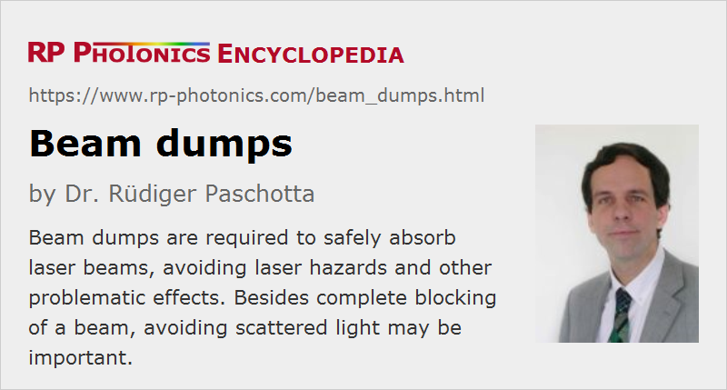

Beam Dumps
Definition: devices for blocking and absorbing light beams
Alternative terms: beam blocks, beam stops, beam traps
German: Strahlstopper
How to cite the article; suggest additional literature
Author: Dr. Rüdiger Paschotta
There are various situations in which one has a light beam, typically a laser beam, which is unwanted either temporarily or at all times, and therefore needs to be blocked – for example, for reasons of laser safety. For such purposes, one can use some kind of beam dump which safely absorbs the optical power. In contrast to a beam shutter, a beam dump cannot be deactivated – to release the beam again, the device needs to be removed.
Some typical situations in which beam dumps are required:
- When some kind of pump laser sends a beam to another device (e.g., a titanium–sapphire laser or an OPO), on which one needs to temporarily work without the pump light (e.g. cleaning some mirrors), one may insert a beam dump between the devices (instead of turning off the pump laser).
- One may need to permanently block beams resulting from parasitic reflections or transmissions. For example, even highly reflecting mirrors in a high-power laser may transmit a significant amount of optical power due to the high circulating intracavity power. Such parasitic beams may cause laser hazards or other problems, for example heating up the holders of some laser mirrors and thus causing thermally induced misalignment.
- Some optical devices produce unwanted beams. For example, the non-diffracted beam of an acousto-optic deflector or one of the outputs of a polarizer in a variable optical attenuator may need to be dumped.
- A kind of beam shutter for very high power levels can be realized with the combination of a beam dump and a movable mirror, which can be moved into the beam to send it to the dump.
Functions and Types of Beam Dumps
The perhaps most essential function of a beam dump is to avoid any of the light to be transmitted on its regular path. That purpose alone can be fulfilled with a simple beam block – for example, a metal part with a black coating (absorbing coating, e.g. anodized aluminum) and possibly some cooling fingers. Such parts are often home-made.
In some cases, it is also important to strongly suppress any reflected and back-scattered light. For example, even a minimum fraction of scattered light from a kilowatt laser beam could be problematic in terms of laser safety. A simple beam stopper may then not be sufficient. Therefore, various kinds of beam traps have been developed which have somewhat more sophisticated setups. For example, there can be a cone-shaped black part into which the beam is sent. Most light which is reflected or scattered despite the absorbing coating reaches other parts of the black cone. Further, in front of the cone one may place some kind of cavity or tube which is also black inside. Optimized optical traps of such kinds send virtually no light back towards the source, at least when operated within the specified range of operation wavelengths.
Power Handling
Beam dumps for use with high-power laser beams have to dissipate substantial powers, which are turned into heat.
For powers up to a few watts, it is normally sufficient to have some kind of cooling fingers attached to the absorber, which can release heat both by convection of air and by heat radiation. Note, however, that beam dumps can become rather hot during operation – sometimes reaching temperatures above 100 °C.
Substantially increased powers (sometimes hundreds of watts) can be dissipated with fan-cooled devices. Possible disadvantages are, besides the somewhat higher cost, that possibly disturbing air flows and vibrations are caused, and a power supply is needed.
For even higher powers (for example, several kilowatts), there are water-cooled beam dumps. Of course, their operation involves additional requirements, such as providing cooling water, safely avoiding any water leaks etc.
In extreme cases, the absorption needs to be distributed over a larger volume. A possible solution is to absorb the light in a tank of water with added substances for obtaining an appropriate amount of absorption.
In any case, a high-power beam should not be sent into a beam dump with a too small beam radius, which would lead to excessive optical intensities. This is particularly the case for beams with high-energy pulses as obtained from Q-switched lasers. Such pulses may cause ablation or other kinds of degradation of the absorber material. Therefore, the specifications of beam dumps may contain limitations to the allowable fluence (in J/cm2) of pulses in addition to a limit for the average power.
Mounting
Permanently needed beam dumps should usually be rigidly fixed in the optical setup, e.g. using screws. It may also be helpful to obtain some heat flow from the beam dump into the base plate. In other cases, heating of the base plate may be unwanted (e.g. if thermal expansion courses misalignment of sensitive setups); one may then need to use a mount which minimizes thermal conduction.
For other beam dumps, which are used only temporarily, it may be more convenient to use a magnetic mount, for example.
Suppliers
The RP Photonics Buyer's Guide contains 17 suppliers for beam dumps. Among them:
Questions and Comments from Users
Here you can submit questions and comments. As far as they get accepted by the author, they will appear above this paragraph together with the author’s answer. The author will decide on acceptance based on certain criteria. Essentially, the issue must be of sufficiently broad interest.
Please do not enter personal data here; we would otherwise delete it soon. (See also our privacy declaration.) If you wish to receive personal feedback or consultancy from the author, please contact him e.g. via e-mail.
By submitting the information, you give your consent to the potential publication of your inputs on our website according to our rules. (If you later retract your consent, we will delete those inputs.) As your inputs are first reviewed by the author, they may be published with some delay.
See also: beam shutters, black coatings
and other articles in the category photonic devices
|  |
If you like this page, please share the link with your friends and colleagues, e.g. via social media:
These sharing buttons are implemented in a privacy-friendly way!